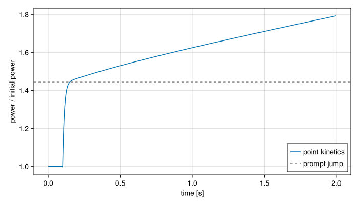

Point kinetics and feedback
The power of a reactor changes with its reactivity $\rho$, the fractional excess of neutrons produced over those lost. STREAM models this with the point kinetics equations, which treat the neutron population as one number with a fixed spatial shape.
From a neutron balance
Count the neutrons in the core, $n$. Each lives on average a time $\ell$ before it is absorbed or leaks out, and each generation produces $k$ neutrons for every one lost, the multiplication factor. Without delayed neutrons the balance would be
\[\frac{dn}{dt} = \frac{k\,n}{\ell} - \frac{n}{\ell} = \frac{k - 1}{\ell}\,n,\]
and with a lifetime of tens of microseconds a reactor a tenth of a percent supercritical would multiply its power by $e$ every few hundredths of a second: too fast for any control system.
What makes a reactor controllable is that a fraction $\beta$ of the fission neutrons, 0.65% for U-235, is not emitted at fission. Some fission products, the delayed neutron precursors, emit a neutron when they decay, seconds to a minute later. Group them by half-life into $G$ groups, each with a concentration $C_k$, a share $\beta_k$ of the neutrons and a decay constant $\lambda_k$. The prompt neutrons now make up only $1 - \beta$ of production, and the precursors add theirs as they decay:
\[\begin{aligned} \frac{dn}{dt} &= (1 - \beta)\,\frac{k\,n}{\ell} - \frac{n}{\ell} + \sum_k \lambda_k C_k, \\ \frac{dC_k}{dt} &= \beta_k\,\frac{k\,n}{\ell} - \lambda_k C_k. \end{aligned}\]
Writing them with the reactivity $\rho = (k - 1)/k$ and the generation time $\Lambda = \ell/k$, and with the fission power $P_n$ in place of $n$, to which it is proportional, gives the point kinetics equations in Keepin's form (Keepin, 1965):
\[\begin{aligned} \frac{dP_n}{dt} &= \frac{\rho - \beta}{\Lambda}\,P_n + \sum_{k=1}^{G} \lambda_k\,C_k,\\ \frac{dC_k}{dt} &= \frac{\beta_k}{\Lambda}\,P_n - \lambda_k\,C_k, \qquad k = 1, \dots, G, \end{aligned}\]
with the precursor concentrations in the same units as the power, and $\beta = \sum_k \beta_k$. The delayed neutrons arrive on average $\sum_k \beta_k/\lambda_k \approx 0.085$ s after their fission, more than a thousand times the prompt generation time, and below prompt criticality it is their pace that sets the pace of the power. PointKinetics takes any number of groups. The defaults are Keepin's six U-235 groups and $\Lambda = 54\ \mu\text{s}$, which belong to a particular core: a real analysis supplies its own.
At criticality, $\rho = 0$, a constant power holds the precursors at $C_k = \beta_k P_n / (\lambda_k \Lambda)$, which point_kinetics_steady_state computes. PointKinetics starts there by default.
The prompt jump
A step of reactivity $\rho < \beta$ makes the power jump almost at once, on the time scale $\Lambda/(\beta - \rho)$, about 12 ms in the example below. The precursors cannot change that fast, so they stay at their old values, and setting $dP_n/dt \approx 0$ across the jump gives the prompt jump approximation:
\[\frac{P_1}{P_0} = \frac{\beta}{\beta - \rho}.\]
After the jump the power grows exponentially with a stable period set by the delayed neutrons, seconds to minutes for small reactivities. At $\rho = \beta$, one dollar, the reactor is critical on prompt neutrons alone, and the power grows on the time scale of $\Lambda$: this is prompt criticality, which a design must exclude.
A step of 0.2% reactivity, about 31 cents, at $t = 0.1$ s:
using STREAM, CairoMakieusing STREAM.Components: PointKinetics, U235_BETA_Kusing ModelingToolkit: @named, mtkcompileCairoMakie.activate!(type="svg")ρ_step = 0.002@named pk = PointKinetics(t -> t < 0.1 ? 0.0 : ρ_step)sys = mtkcompile(pk)times = range(0.0, 2.0; length=801)sol = solve_transient(sys, times; tstops=[0.1])β = sum(U235_BETA_K)fig = Figure(size=(700, 400))ax = Axis(fig[1, 1]; xlabel="time [s]", ylabel="power / initial power")lines!(ax, sol.t, sol[sys.P_neutron, :]; label="point kinetics")hlines!(ax, [β / (β - ρ_step)]; linestyle=:dash, color=:gray, label="prompt jump")axislegend(ax; position=:rb)fig
Just after the step the power sits at
sol(0.15; idxs=sys.P_neutron)1.4442133269543123against the prompt jump approximation's
β / (β - ρ_step)1.444247001332741and then rises slowly as the precursors build up.
Reactivity
The reactivity the equations see is the sum of what the control system inserts and the feedback of the core's temperatures:
\[\rho(t) = \rho_c(t) + \sum_j \alpha_j\,(T_j - T_{\text{ref},j}).\]
Control reactivity $\rho_c(t)$ is any function of time: a rod withdrawal, a step, a scram. A ReactivityController makes it a function of the state of a control system as well, so a scram can start when a trip fires (see Events and control).
Feedback sums over cells $j$ of the components that feed back, fuel plates and coolant channels, each with a coefficient $\alpha_j$ in reactivity per kelvin and a reference temperature at which it contributes nothing. A negative coefficient is a stabilising one: as the core heats, reactivity falls and the power with it. The coefficients are given per component, as one number or one per cell, so a coefficient can follow the importance of each region of the core. temperature_feedback joins the kinetics to the temperatures it reads.
Power and its uses
PointKinetics integrates $P_n$, the power from fission. Its total power is
\[P = P_n + P_\text{input}(t),\]
where $P_\text{input}$ is power that fission does not produce, such as decay heat (see Decay heat). A fuel plate should be heated by $P$, the power it actually receives.
The kinetics can run in watts, or in units of the initial power with $P_0 = 1$ and a scale factor where the fuel's power is bound. Any $P_\text{input}$ has to be in the same units.
What the point model leaves out
The point model assumes the neutron flux keeps its shape as its amplitude changes. A rod that moves changes the shape, and a local reactivity effect weighs differently in different places. The per-cell feedback coefficients are where the spatial importance enters. A transient with a strong change of flux shape, or a core whose regions are loosely coupled, needs spatial kinetics, which STREAM does not have.
References
- Keepin, G. R. (1965). Physics of Nuclear Kinetics (Addison-Wesley, Reading, MA).